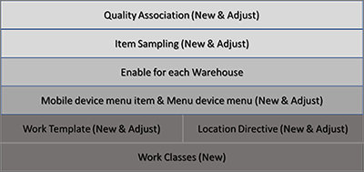

Qualitätsmanagement für Lagerortprozesse
Die Funktion Qualitätsmanagement für Lagerortprozesse erweitert die Funktionen des Qualitätsmanagements und ermöglicht Ihnen, mithilfe der erweiterten Lagerverwaltung Steuerelemente für die Probenahme von Artikeln in den Wareneingangsprozess zu integrieren. Lagerortarbeit kann automatisch generiert werden, um Bestand an den Ort für die Qualitätskontrolle zu verschieben, und zwar basierend auf einem Prozentsatz oder einer festen Menge oder basierend auf jedem n-ten Kennzeichen. Nach Abschluss eines Qualitätsprüfungsauftrags kann abhängig von den Ergebnissen der Qualitätsprüfung automatisch Arbeit generiert werden, um Bestand an den nächsten Ort im Prozess zu verschieben.
Die Funktion Qualitätsmanagement für Lagerortprozesse erweitert die Möglichkeiten des grundlegenden Qualitätsmanagements. Sie bietet die Möglichkeit, Qualitätsprüfungsaufträge für den Bestand zu erstellen, der an den Ort für die Qualitätskontrolle gesendet wird, obwohl Qualitätsprüfungsaufträge nicht immer erforderlich sind. Daher ermöglicht sie einen einfachen Qualitätskontrollenprozess, der auf Lagerortarbeit basiert.
Aktivieren der Funktion „Qualitätsmanagement für Lagerortprozesse“
Bevor Sie diese Funktion nutzen können, muss sie auf Ihrem System aktiviert werden. Administratoren können mit den Einstellungen Funktionsverwaltung den Status der Funktion überprüfen und sie aktivieren. Im Arbeitsbereich Funktionsverwaltung ist die Funktion wie folgt aufgeführt:
- Module: Lagerortverwaltung
- Funktionsname: Qualitätsmanagement für Lagerortprozesse
Die wichtigsten Vorteile
Die Funktion Qualitätsmanagement für Lagerortprozesse generiert automatisch Arbeit als Teil des Empfangsprozesses, um die für die Qualitätskontrolle erforderliche Bestandsmenge an einen Ort für die Qualitätskontrolle zu verschieben. Wenn die empfangene Menge die zur Qualitätskontrolle erforderliche Menge überschreitet (gemäß den Einstellungen für die Artikelmusteraufnahme), wird die überschüssige Menge an einen eingehenden Lagerplatz verschoben, der in den Einstellungen der Lagerplatzdirektive definiert ist. Nachdem der Qualitätsprüfungsauftrag validiert wurde, wird automatisch Arbeit generiert, um die Menge für den Qualitätsprüfungsauftrag basierend auf dem Prüfergebnis und den Einstellungen der Lagerplatzdirektive an einen neuen Eingangs- oder Rückgabeort zu verschieben. Die automatische Generierung von Arbeit, die nur die Menge enthält, die zur und von der Qualitätskontrolle bewegt werden muss, bietet eine integrierte Prozesserfahrung.
Note
Wenn die Funktion Qualitätsmanagement für Lagerortprozesse aktiviert ist, können Sie den manuellen Prozess dennoch weiterhin nutzen. Im manuellen Prozess werden Bestandsbewegungen und Verlagerungen nach Vorlage verwendet, damit eine Lagerarbeitskraft die Erstellung von Lagerarbeiten auslöst, um Bestände von einem Ort für die Qualitätskontrolle an einen neuen Ort zu verschieben. Sie können auch weiterhin eine Richtlinie für eingehende Lagerorte einrichten, mit der der gesamte Bestand von einem Empfangsort an einen Ort für die Qualitätskontrolle verschoben wird, ohne die Einstellungen für die Artikelmusteraufnahme zu berücksichtigen.
Qualitätsmanagement und die Funktion „Qualitätsmanagement für Lagerortprozesse“
Wenn die Funktion Qualitätsmanagement für Lagerortprozesse aktiviert ist, ändert sich die Einrichtung der wichtigsten Entitäten für das Lagermanagement und das Qualitätsmanagement. Die folgende Abbildung gibt einen Überblick über die Entitäten, die Qualitätsprüfungsaufträge für Lagerortprozesse ermöglichen. Der Text in Klammern zeigt die vorgeschlagenen Maßnahmen an, wenn das Qualitätsmanagement angewendet wurde, bevor die Funktion Qualitätsmanagement für Lagerortprozesse aktiviert wurde.

Enabler: Die Arbeitsauftragstypen „Qualitätsartikelmuster“ und „Qualitätsprüfungsauftrag“
Die Funktion Qualitätsmanagement für Lagerortprozesse führt zwei Arbeitsauftragstypen ein, die den Arbeitserstellungsprozess ermöglichen:
- Qualitätsartikelmuster – Dieser Arbeitsauftragstyp wird verwendet, um Arbeit zu erstellen, mit der registrierter Bestand zur Qualitätskontrolle verschoben wird.
- Qualitätsprüfungsauftrag – Dieser Arbeitsauftragstyp wird verwendet, um Arbeit zu erstellen, mit der Bestand basierend auf den Einstellungen der Lagerplatzdirektive von der Qualitätskontrolle an einen neuen Lagerplatz verschoben wird.
Arbeitsklassen, Lagerplatzrichtlinien und Arbeitsvorlagen
Die Arbeitsauftragstypen Qualitätsartikelmuster und Qualitätsprüfungsauftrag werden von Lagerplatzrichtlinien, Arbeitsklassen und Arbeitsvorlagen verwendet.
Bevor Lagerarbeiten automatisch generiert werden können, um den Bestand zur Qualitätskontrolle zu verschieben, müssen Sie diese Schritte ausführen, um Ihr System einzurichten.
Erstellen Sie separate Arbeitsklassen für die Arbeitsauftragstypen Qualitätsartikelmuster und Qualitätsprüfungsauftrag. Auf diese Weise stellen Sie sicher, dass basierend auf den beiden Arbeitsauftragstypen automatisch entsprechende Arbeit generiert werden kann und diese Arbeit dann mithilfe der Warehouse-App ausgeführt werden kann.
Einrichten einer Arbeitsvorlage für jeden Arbeitsauftragstyp:
- Richten Sie eine Arbeitsvorlage ein, die den Arbeitsauftragstyp Qualitätsartikelmuster verwendet, um registrierten Bestand automatisch an einen Ort für die Qualitätskontrolle zu verschieben.
- Richten Sie eine Arbeitsvorlage ein, die den Arbeitsauftragstyp Qualitätsprüfungsauftrag verwendet, um Bestand von einem Ort für die Qualitätskontrolle zu verschieben, nachdem die Qualitätskontrolle abgeschlossen wurde.
Richten Sie für jeden Arbeitsauftragstyp Lagerplatzrichtlinien ein, die den Bestand an die richtigen Orte für die Qualitätskontrolle verschieben. Nach Abschluss der Qualitätskontrolle stellt die Lagerplatzrichtlinie für den Arbeitsauftragstyp Qualitätsprüfungsauftrag sicher, dass ein neuer Zielort ausgewählt wird, damit der Bestand vom Ort für die Qualitätskontrolle verschoben werden kann.
Richten Sie die entsprechenden Menüoptionen für mobile Geräte ein, um die Verschiebung des empfangenen Bestands zum Ort für die Qualitätskontrolle und die Verschiebung des Bestands, der die Qualitätskontrolle besteht oder nicht besteht, vom Ort für die Qualitätskontrolle an einen neuen Ort zu unterstützen.
Ein Schritt-fürSchritt-Beispiel für die Durchführung dieser Einrichtung finden Sie im Beispielszenario am Ende dieses Themas.
Vorbereiten eines Lagerortes für das Qualitätsmanagement
Bevor die Funktion Qualitätsmanagement für Lagerortprozesse für einen bestimmten Lagerort angewendet werden kann, müssen Sie die folgenden Schritte ausführen, um die Funktion für diesen Lagerort verfügbar zu machen.
- Wechseln Sie zu Lagerortverwaltung > Einstellungen > Lagerort > Lagerorte.
- Wählen Sie den Lagerort aus, der für das Qualitätsmanagement vorbereitet werden soll.
- Legen Sie im Inforegister Lagerort die Option Qualitätsprüfungsaufträge für Lagerortprozesse aktivieren auf Ja fest. (Beachten Sie, dass diese Option nur für Lagerorte, die Lagerortverwaltungsprozesse verwenden, auf Ja eingestellt werden kann.)
Wenn die Option Qualitätsprüfungsaufträge für Lagerortprozesse aktivieren auf Ja festgelegt ist, steuern die Einstellungen für die Qualitätszuordnung, ob die Funktion Qualitätsmanagement für Lagerortprozesse für den ausgewählten Lagerort auch wirklich angewendet wird. Sie können die Einstellung der Option jederzeit zu Nein ändern. In diesem Fall gilt die Funktion unabhängig von den Einstellungen für die Qualitätszuordnung für den Lagerort nicht mehr.
Qualitätskontrolle
Die Funktion Qualitätsmanagement für Lagerortprozesse steuert mehrere wichtige Einstellungen für Qualitätszuordnungen und Artikelmuster.
Qualitätszuordnungen
Jeder Qualitätszuordnungsdatensatz definiert die Tests, das akzeptable Qualitätsniveau (AQL) und den Musteraufnahmeplan, die für die generierten Qualitätsprüfungsaufträge gelten. Gehen Sie folgendermaßen vor, um einen Qualitätszuordnungsdatensatz einzurichten.
Wechseln Sie zu Bestandsverwaltung > Einstellungen > Qualitätskontrolle > Qualitätszuordnungen.
Erstellen Sie für den Artikel oder die Gruppe, mit der Sie arbeiten, oder für alle Artikel den Qualitätszuordnungseintrag oder wählen Sie einen aus.
Wählen Sie im Inforegister Bedingungen für das Feld Zutreffender Lagerorttyp einen der folgenden Werte aus:
- Qualitätsmanagement nur für Lagerortprozesse – Aktivieren Sie die Funktion Qualitätsmanagement für Lagerortprozesse. Sie können diesen Wert nur auswählen, wenn der Referenztyp entweder Kauf oder Produktion ist.
- Alle – Deaktivieren Sie die Funktion Qualitätsmanagement für Lagerortprozesse. Wählen Sie diesen Wert für alle Referenztypen außer Kauf und Produktion aus.
Note
Die Funktion Qualitätsmanagement für Lagerortprozesse wird nur wirksam, wenn der Artikel in der Quelldokumentzeile erweiterte Lagerortverwaltungsprozesse verwendet und wenn die Option Qualitätsprüfungsaufträge für Lagerortprozesse aktivieren für den Lagerort in der Quelldokumentzeile auf Ja festgelegt ist.
Da jeder Artikel registriert (oder als fertig gemeldet) wird, bestimmt das System, welche Qualitätszuordnungen für ihn gelten.
Wenn die Funktion Qualitätsmanagement für Lagerortprozesse aktiviert ist, wird der entsprechende Lagerorttyp logisch in die vierte Suchgruppe der Suchhierarchie für Qualitätszuordnungen eingefügt. Die folgende Tabelle zeigt eine logische Darstellung der Suchhierarchie.
| Suchgruppe | Beschreibung |
|---|---|
| Gruppe 1 | Prüfen Sie für jede Qualitätszuordnung die Werte Referenztyp, Ereignistyp und Ausführungsübereinstimmung gegen den Artikel. Wenn eine Übereinstimmung mit der Quelldokumentzeile besteht, fahren Sie mit Gruppe 2 fort. |
| Gruppe 2 | Prüfen Sie für jede Qualitätszuordnung den Wert Artikelcode (Tabelle, Gruppe oder Alle) gegen den Artikel. Tabelle ist spezifischer als Gruppe und Gruppe ist wiederum spezifischer als Alle. Wenn es eine Übereinstimmung für Tabelle (einen bestimmten Artikel) gibt, fahren Sie mit Gruppe 3 fort. Wenn es keine Übereinstimmung für Tabelle gibt, suchen Sie nach einer Übereinstimmung für Gruppe. Wenn es keine Übereinstimmung für Gruppe gibt, trifft Alle zu. Wenn es eine Übereinstimmung gibt, fahren Sie mit Gruppe 3 fort. |
| Gruppe 3 | Prüfen Sie für jede Qualitätszuordnung die Werte Kontocode und Ressourcencode gegen den Artikel. Die angewendete Logik ähnelt der Logik, die für den Wert Artikelcode angewendet wird. |
| Gruppe 4 | Prüfen Sie für jede Qualitätszuordnung den Wert Zutreffender Lagerorttyp (Qualitätsmanagement nur für Lagerortprozesse oder Alle) gegen den Artikel. Wenn die Option Qualitätsprüfungsaufträge für Lagerortprozesse aktivieren für den Lagerort im Quelldokument auf Ja festgelegt ist und der Artikel in der Quelldokumentzeile auf Benutzerfehlerprotokoll für Lagerortverwaltungsprozesse verwenden, treffen beide Zuordnungen mit einer Übereinstimmung für Qualitätsmanagement nur für Lagerortprozesse und Zuordnungen mit einer Übereinstimmung für Alle gleichzeitig zu, sofern beide existieren. Wenn die Option Qualitätsprüfungsaufträge für Lagerortprozesse aktivieren für den Lagerort in der Quelldokumentzeile auf Nein festgelegt ist und der Artikel in der Quelldokumentzeile auf Benutzerfehlerprotokoll für Lagerortverwaltungsprozesse verwenden, trifft nur das Qualitätsmanagement zu. |
Beispiel: Sie haben einen Lagerort definiert, für den die Option Qualitätsprüfungsaufträge für Lagerortprozesse aktivieren auf Ja festgelegt ist und es gibt zwei Qualitätszuordnungen, die für den Referenztyp Kauf definiert sind, eine davon für alle Artikel und eine für den Ereignistyp Registrierung. Der einzige Unterschied zwischen den beiden Qualitätszuordnungen ist der Wert Zutreffender Lagerorttyp, der für eine Qualitätszuordnung auf Alle festgelegt und für die andere auf Qualitätsmanagement nur für Lagerortprozesse. In diesem Fall sind beide Qualitätszuordnungen gleich spezifisch und beide sind zutreffend.
Der Wert im Feld Testgruppe für die Qualitätszuordnungen ist ebenfalls ein Faktor. Dieses Feld definiert das Prüfverfahren, das angewendet werden muss. Falls der Wert Testgruppe für beide Zuordnungen identisch ist, wird nur ein Qualitätsprüfungsauftrag erstellt, und zwar für die Qualitätszuordnung, für die der Wert Zutreffender Lagerorttyp auf Qualitätsmanagement nur für Lagerortprozesse festgelegt ist. Ist der Wert Testgruppe nicht für beide Zuordnungen identisch, werden zwei Qualitätsprüfungsaufträge erstellt. Der erste Qualitätsprüfungsauftrag wird für diejenige Qualitätszuordnung erstellt, für die der Wert Zutreffender Lagerorttyp auf Qualitätsmanagement nur für Lagerortprozesse festgelegt ist. Der zweite Qualitätsprüfungsauftrag wird für diejenige Qualitätszuordnung erstellt, für die der Wert Zutreffender Lagerorttyp auf Alle festgelegt ist.
Note
Der Wert Qualitätsmanagement nur für Lagerortprozesse wird als spezifischer angesehen als Alle, wenn die Kriterien für die Qualitätszuordnungen für die Gruppen 1 und 2 identsich sind und wenn die Testgruppe dieselbe ist. Zwei Qualitätsprüfungsaufträge werden nur dann erstellt, wenn sich die Testgruppen unterscheiden.
Referenztypen
Wenn der Wert Referenztyp auf Kauf und der Wert Zutreffender Lagerorttyp auf Qualitätsmanagement nur für Lagerortprozesse festgelegt sind , muss für das Feld Ereignistyp im Inforegister Prozess der Wert Registrierung ausgewählt werden. Registrierung ist der einzige unterstützte Ereignistyp für den Referenztyp Kauf, wenn Sie die Funktion Qualitätsmanagement für Lagerortprozesse verwenden.
Qualitätsverarbeitungsrichtlinie
Die Funktion Qualitätsmanagement für Lagerortprozesse ermöglicht das Erstellen von Arbeit nur auf der Grundlage der Artikelmusteraufnahme. Daher ermöglicht sie einen einfachen Prozess. Der Bestand, für den die Arbeit erstellt wird, hängt von der Artikelmusteraufnahme ab, die der Qualitätszuordnung zugeordnet ist. Wenn der einfache Prozess verwendet wird, kann die Qualitätsabteilung, nachdem eine Arbeitskraft die Menge am Ort für die Qualitätskontrolle abgelegt hat, manuell einen Qualitätsauftrag erstellen, falls ein Qualitätsauftrag erforderlich ist.
Das Feld Qualitätsverarbeitungsrichtlinie im Inforegister Qualitätsauftragsprozess steuert, ob beim Erstellen von Arbeit zum Verschieben eines Artikels an den Ort für die Qualitätskontrolle auch ein Qualitätsprüfungsauftrag erstellt wird. Dieses Feld kann auf Qualitätsprüfungsauftrag erstellen oder Nur Arbeit erstellen festgelegt werden. Das Standardwert ist Qualitätsprüfungsauftrag erstellen.
Note
Unabhängig davon, ob Sie Qualitätsprüfungsaufträge manuell oder automatisch erstellen, generiert das System automatisch Arbeit zum Verschieben von Artikeln vom Ort für die Qualitätskontrolle, wenn der Qualitätsprüfungsauftrag als geprüft markiert wird.
Die Erstellung von Arbeit im Zusammenhang mit Qualitätsprüfungsaufträgen hängt nicht mit den Einstellungen für die Qualitätszuordnung zusammen. Wenn eine Arbeitsvorlage vorhanden ist, für die der Wert Arbeitsauftragsart auf Qualitätsprüfungsauftrag festgelegt ist, und wenn die Abfragekriterien für diese Arbeitsvorlage eingehalten werden, löst die Prüfung eines Qualitätsprüfungsauftrags die Erstellung von Arbeit aus.
Referenzierte Artikelmusteraufnahme
Jede Qualitätszuordnung muss eine Artikelmusteraufnahme referenzieren. Eine Artikelmusteraufnahme definiert die Menge, die zur Qualitätskontrolle gesendet wird. Sie kann so eingerichtet werden, dass sie nur für Qualitätszuordnungen zutrifft, für die der Wert Zutreffender Lagerorttyp auf Qualitätsmanagement nur für Lagerortprozesse festgelegt ist. Wenn der Wert Musterumfang für eine Artikelmusteraufnahme auf Ladung oder Lieferung festgelegt ist oder der Wert Mengenspezifikation auf Vollständiges Kennzeichen, kann die Artikelmusteraufnahme nur durch Qualitätszuordnungen referenziert werden, für die der Wert Zutreffender Lagerorttyp auf Qualitätsmanagement nur für Lagerortprozesse festgelegt ist.
Wenn Sie eine Artikelmusteraufnahme definieren, die den für Qualitätsmanagement nur für Lagerortprozesse zutreffenden Lagerorttyp verwendet, erhalten Sie eine Fehlermeldung, falls Sie versuchen, sie über eine Qualitätszuordnung zu referenzieren, die nicht die Funktion Qualitätsmanagement für Lagerortprozesse verwendet.
Note
Eine Artikelmusteraufnahme, die die vollständige Sperrung verwendet, wird für Qualitätszuordnungen nicht unterstützt, bei denen für das Feld Zutreffender Lagerorttyp der Wert Qualitätsmanagement nur für Lagerortprozesse ausgewählt ist.
Artikelmusteraufnahme
Die Artikelmusteraufnahme steuert, wie oft Artikel zur Qualitätskontrolle gesendet werden. Die Funktion Qualitätsmanagement für Lagerortprozesse führt das Konzept des Umfangs der Artikelmusteraufnahme ein. Das System verwendet den Umfang der Artikelmusteraufnahme, wenn es bewertet, ob und wie Qualitätsprüfungsaufträge und/oder Arbeit für Qualitätsartikelmuster und Qualitätsaufträge erstellt werden sollen.
Um die Artikelmusteraufnahme einzurichten, wechseln Sie zu Bestandsverwaltung > Einstellungen > Qualitätskontrolle > Artikelmusteraufnahme und wählen für das Feld Musterumfang einen der folgenden Werte aus:
- Auftrag – Die Quelldokumentzeile dient als Grundlage für die Bewertung, ob und wie Qualitätsprüfungsaufträge und/oder Arbeit für Qualitätsartikelmuster und Qualitätsaufträge erstellt werden. Dieser Wert ist der Standardwert und wenn er ausgewählt ist, funktioniert das System auf dieselbe Weise, wie bei nicht aktivierter Funktion Qualitätsmanagement für Lagerortprozesse.
- Ladung – Ladungen dienen als Grundlage zur Bewertung, ob und wie ein Qualitätsprüfungsauftrag und/oder Arbeit erstellt wird. Dieser Wert ist nur dann verfügbar, wenn die Funktion Qualitätsmanagement für Lagerortprozesse aktiviert ist.
- Lieferung – Lieferungen dienen als Grundlage zur Bewertung, ob und wie ein Qualitätsprüfungsauftrag und/oder Arbeit erstellt wird. Dieser Wert ist nur dann verfügbar, wenn die Funktion Qualitätsmanagement für Lagerortprozesse aktiviert ist.
Note
Wenn für das Feld Musterumfang entweder Ladung oder Lieferung ausgewählt ist, werden die Ladungsentität und die Lieferungsentitäten verwendet, sofern sie verfügbar sind. Sind Sie nicht verfügbar, wird die Auftragsentität verwendet.
Die Funktion Qualitätsmanagement für Lagerortprozesse führt außerdem den Wert Vollständiges Kennzeichen für das Feld Mengenspezifikation ein. Dieser Wert unterstützt die Erstellung von Arbeit für Qualitätsprüfungsaufträge und Qualitätsartikelmuster auf der Grundlage von Kennzeichen. Wenn Sie diesen Wert auswählen, kommt es zu folgenden Änderungen:
- Die Option Anzahl nach Artikel aufteilen und das Feld Pro n-tem Kennzeichen im Inforegister Prozess stehen zur Verfügung.
- Das Feld Wert im Inforegister Menge der Artikelmusteraufnahme steht nicht mehr zur Verfügung.
- Die Optionen Pro aktualisierter Menge, Lagerort und Kennzeichen werden alle auf Ja festgelegt und die Einstellungen können nicht geändert werden.
Die Option Anzahl nach Artikel aufteilen steuert, ob die Kennzeichenanzahl pro Artikel oder für alle Artikel im Umfang der Artikelmusteraufnahme bewertet wird. Produktvarianten werden als gleicher Artikel behandelt. Diese Option steuert auch, ob die Kennzeichenanzahl für jeden Artikel zurückgesetzt wird.
Der Wert für das Feld Pro n-tem Kennzeichen steuert, wie oft Qualitätsprüfungsaufträge in Bezug auf die Anzahl der registrierten Artikel erstellt werden. Beispiel: Für einen Wert von 3 wird jeder dritte Artikel an die Qualitätskontrolle gesendet, beginnend mit dem ersten Artikel. Der Wert muss größer als 0 (null) sein.
Während Arbeitskräfte mithilfe der Warehouse-App Artikel erhalten, überprüft das System, ob für jeden eingehenden Artikel eine Qualitätszuordnung eingerichtet wurde. Wenn eine Qualitätszuordnung eingerichtet ist, verwendet das System den für diese Qualitätszuordnung konfigurierten Artikelmusteraufnahme-Datensatz, um zu bestimmen, wie Qualitätsprüfungsaufträge, Arbeit für Qualitätsartikelmuster und Arbeit für Bestellungen erstellt werden.
Note
Wenn die Eingangsregistrierung im Webclient erfolgt (über die kleine Registrierungsseite oder die Wareneingangserfassung für Bestellpositionen), wird unabhängig von der Einrichtung keine Arbeit für Qualitätsartikelmuster oder Arbeit für Bestellungen erstellt. Stattdessen wird für Artikel, die einer Qualitätszuordnung entsprechen, die referenzierte Artikelmusteraufnahme verwendet, um nur die Erstellung von Qualitätsprüfungsaufträgen zu steuern.
Beispiele zur automatischen Generierung von Qualitätsprüfungsaufträgen
Die folgenden Beispiele zeigen, wie sich die Einrichtung einer Qualitätszuordnung und einer zugehörigen Artikelmusteraufnahme auf die Generierung von Qualitätsprüfungsaufträgen auswirkt, wenn für das Feld Zutreffender Lagerorttyp die Option Qualitätsmanagement nur für Lagerortprozesse ausgewählt ist.
Wenn der Wert Mengenspezifikation auf Vollständiges Kennzeichen festgelegt ist, steuert das Feld Pro n-tem Kennzeichen, für welche Kennzeichen Arbeit für Qualitätsartikelmuster erstellt wird. Das erste Kennzeichen wird immer einer Qualitätskontrolle unterzogen. Der Wert dieses Feldes gibt dann an, dass jedes n-te Kennzeichen nach diesem Kennzeichen ebenfalls einer Qualitätskontrolle unterzogen werden sollte.
Der Wert Referenztyp für die folgenden Beispiele lautet Kauf und der Wert Ereignistyp ist Registrierung.
| Musterumfang | Mengespezifikation | Pro aktualisierter Menge | Pro Lagerdimension | Zählung nach Artikel | Alle x Ladungsträger | Ergebnis |
|---|---|---|---|---|---|---|
| Auftrag | Vollständiger Ladungsträger | Ja (gesperrt/nicht bearbeitbar) | Lagerort: Ja Kennzeichen: Ja (gesperrt/nicht bearbeitbar) |
Nr. | 3 | Auftragspositionsmenge: 100 EA
|
| Auftrag | Feste Menge = 1 | Ja | Lagerort: Ja Kennzeichen: Ja |
Nr. | Nicht zutreffend | Auftragspositionsmenge: 100
|
| Auftrag | Prozent = 10 | Nr. | Lagerort: Nein Kennzeichen: Nein |
Nr. | Nicht zutreffend | Auftragspositionsmenge: 100 EA
|
| Last | Prozent = 5 | Ja (gesperrt/nicht bearbeitbar) | Lagerort: Nein Kennzeichen: Nein |
Nr. | Nicht zutreffend | Auftragspositionsmenge: 500 EA Zwei Ladungen: erste Ladung 200 EA, zweite Ladung 300 EA
|
| Auftrag | Prozent = 10 | Nr. | Lagerort: Ja Kennzeichen: Ja |
Nr. | Nicht zutreffend | Auftragspositionsmenge: 100
|
| Last | Vollständiger Ladungsträger | Ja (gesperrt/nicht bearbeitbar) | Lagerort: Ja Kennzeichen: Ja (gesperrt/nicht bearbeitbar) |
Nr. | 3 | Zwei Artikel:
Eine Ladung, zwei Ladungspositionen für jede Auftragsposition
|
| Last | Vollständiger Ladungsträger | Ja (gesperrt/nicht bearbeitbar) | Lagerort: Ja Kennzeichen: Ja (gesperrt/nicht bearbeitbar) |
Ja | 3 | Zwei Artikel:
Eine Ladung, zwei Ladungspositionen für jede Auftragsposition
|
| Last | Prozent = 10 | Ja (gesperrt/nicht bearbeitbar) | Lagerort: Nein Kennzeichen: Nein |
Nr. | Nicht zutreffend | Auftragspositionsmenge: 100 EA Es werden keine Ladungen erstellt. Der Auftragsumfang wird angewendet.
|
Wenn eine Arbeitskraft eine der in der vorherigen Tabelle aufgeführten Qualitätszuordnungen prüft, generiert das System automatisch Arbeit für Qualitätsprüfungsaufträge, um Bestand vom Ort für die Qualitätskontrolle an den Ort zu verschieben, der in der Lagerplatzrichtlinie für den Arbeitsauftragstyp Qualitätsprüfungsauftrag definiert ist. Abhängig vom Testergebnis für den Qualitätsprüfungsauftrag können Sie zu diesem Zweck einen beliebigen Ort einrichten, z. B. einen Rückgabe- oder Lagerort. Ein Beispiel für diese Einrichtung finden Sie im Beispielszenario am Ende dieses Themas.
Sie können einen bereits validierten Qualitätsprüfungsauftrag erneut öffnen, falls die Arbeit für den Qualitätsprüfungsauftrag, die mit dem Verschieben des Bestands vom Ort für die Qualitätskontrolle zusammenhängt, nicht über einen Wert Arbeitsstatus von Geschlossen oder In Bearbeitung verfügt.
Prozesseinblicke, wenn mehrere Qualitätszuordnungen gleichzeitig existieren
Es können mehrere Qualitätszuordnungen für dieselbe Quelldokumentzeile definiert und auf diese angewendet werden und für das Feld Zutreffender Lagerorttyp kann für manche dieser Qualitätszuordnungen Qualitätsmanagement nur für Lagerortprozesse ausgewählt werden und Alle für andere.
Im folgenden Beispiel ist der Wert Referenztyp auf Kauf festgelegt.
Die erste Qualitätszuordnung wird folgendermaßen eingerichtet:
- Zutreffender Lagerorttyp: Qualitätsmanagement nur für Lagerortprozesse
- Artikelcode: A0001
- Kontocode: Alle
- Testgruppe: Anlage
- Artikelmusteraufnahme: 5 Stk.
Die zweite Qualitätszuordnung wird folgendermaßen eingerichtet:
- Zutreffender Lagerorttyp: Alle
- Artikelcode: Alle
- Kontocode: Alle
- Testgruppe: Anlage
- Artikelmusteraufnahme: 1 Stk.
Die dritte Qualitätszuordnung wird folgendermaßen eingerichtet:
- Zutreffender Lagerorttyp: Qualitätsmanagement nur für Lagerortprozesse
- Artikelcode: Alle
- Kontocode: 104
- Testgruppe: Widerstand
- Artikelmusteraufnahme: Jedes zweite Kennzeichen (Diese Einstellung bedeutet, dass das erste, das dritte, das fünfte Kennzeichen usw., das empfangen wird, einen Qualitätsprüfungsauftrag erstellt.)
Die vierte Qualitätszuordnung wird folgendermaßen eingerichtet:
- Zutreffender Lagerorttyp: Alle
- Artikelcode: Alle
- Kontocode: Alle
- Testgruppe: Widerstand
- Artikelmusteraufnahme: 5 Stk.
Die fünfte Qualitätszuordnung wird folgendermaßen eingerichtet:
- Zutreffender Lagerorttyp: Alle
- Artikelcode: Alle
- Kontocode: Alle
- Testgruppe: Kegel
- Artikelmusteraufnahme: 10 %
Für den Lieferanten 104 wird nun eine Bestellung für eine Menge von 10 Stück des Artikels A0001 erstellt. Anschließend wird eine Bestellposition mit einer Menge von 10 mithilfe der Warehouse-App auf einem Kennzeichen als empfangen registriert. Hier ist das Ergebnis:
- Es gibt einen Qualitätsprüfungsauftrag von der ersten Qualitätszuordnung für die Testgruppe Anlage. Die Menge beträgt 5. Es gibt keinen Qualitätsprüfungsauftrag von der zweiten Qualitätszuordnung, da die Kriterien für die erste Qualitätszuordnung in Bezug auf die Testgruppe Anlage spezifischer sind.
- Es gibt einen Qualitätsprüfungsauftrag für die dritte Qualitätszuordnung für die Testgruppe Widerstand. Die Menge beträgt 10. Es gibt keinen Qualitätsprüfungsauftrag von der vierten Qualitätszuordnung, da die Kriterien für die erste Qualitätszuordnung in Bezug auf die Testgruppe Widerstand spezifischer sind.
- Es gibt einen Qualitätsprüfungsauftrag für die fünfte Qualitätszuordnung für die Testgruppe Kegel. Die Menge beträgt 1.
Im Zusammenhang mit der Erstellung eines Qualitätsprüfungsauftrags für jede der drei Qualitätszuordnungen wird auch Arbeit für Qualitätsartikelmuster erstellt. Die registrierte Menge beträgt nur 10. Aufgrund der Einstellungen für die Artikelmusteraufnahme beläuft sich jedoch die Summe der Mengen der Qualitätsprüfungsaufträge, die für den zutreffenden Lagerorttyp Qualitätsmanagement nur für Lagerortprozesse erstellt werden, auf 16, was die physisch registrierte Menge von 10 überschreitet. Daher wird keine Arbeit für alle die gesamte Menge der Qualitätsprüfungsaufträge (16) erstellt, da für den Transport zum Ort für die Qualitätskontrolle nur 10 physisch verfügbar sind. Die Priorität beim Erstellen von Arbeit für Qualitätsartikelmuster folgt der Reihenfolge der Erstellung von Qualitätsprüfungsaufträgen:
- Erster Qualitätsprüfungsauftrag (Menge = 5): Qualitätsartikelmuster-Arbeit für 5 wird erstellt. Es verbleibt nun eine Menge von 5 (10 abzüglich 5) für die spätere Erstellung von Qualitätsartikelmuster-Arbeit.
- Zweiter Qualitätsprüfungsauftrag (Menge = 10): Qualitätsartikelmuster-Arbeit für 5 wird erstellt. Es verbleibt nun eine Menge von 0 (null) für die spätere Erstellung von Qualitätsartikelmuster-Arbeit.
- Dritter Qualitätsprüfungsauftrag (Menge = 1): Keine Qualitätsartikelmuster-Arbeit wird erstellt.
Im Rahmen der Erstellung der Qualitätsprüfungsaufträge wird eine Sperrung von Lagerbestand für 10 Stück erstellt. Diese Sperrung von Lagerbestand wird für jeden der drei Qualitätsprüfungsaufträge referenziert. Die Summe der Mengen der Qualitätsprüfungsaufträge beträgt 16.
Wenn die Qualitätsprüfungsaufträge geprüft werden, versucht das System, für jeden geprüften Qualitätsprüfungsauftrag Arbeit zu erstellen. Da die Summe der Mengen der Qualitätsprüfungsaufträge die Menge überschreitet, die tatsächlich gesperrt und daher für die Arbeitserstellung verfügbar ist, kann nicht für die gesamte Menge der Qualitätsprüfungsaufträge Arbeit für Qualitätsprüfungsaufträge erstellt werden, wie hier gezeigt. (Bei diesem Beispiel wird das vorherige Bespiel fortgesetzt.)
Prüfen Sie den zweiten erstellten Qualitätsprüfungsauftrag (Menge = 10). Die Arbeit für Qualitätsprüfungsaufträge wird für eine Menge von 4 erstellt.
Die Erstellung von Arbeit für Qualitätsprüfungsaufträge wird durch eine Änderung der Menge für die Sperrung von Lagerbestand ausgelöst. Da die Summe der Mengen der Qualitätsprüfungsaufträge 16 betrug, führt die Prüfung einer Menge von 10 dazu, dass 6 Mengen der Qualitätsprüfungsaufträge zur Prüfung verbleiben. Die Menge für die Sperrung von Lagerbestand wird von 10 auf 6 reduziert. Die reduzierte Menge von 4 wird der Erstellung von Arbeit für Qualitätsprüfungsaufträge zugeteilt.
Prüfen Sie den ersten erstellten Qualitätsprüfungsauftrag (Menge = 5). Die Arbeit für Qualitätsprüfungsaufträge wird für eine Menge von 5 erstellt.
Die Erstellung von Arbeit für Qualitätsprüfungsaufträge wird durch eine Änderung der Menge für die Sperrung von Lagerbestand ausgelöst. Da die Summe der Mengen der Qualitätsprüfungsaufträge 6 betrug, führt die Prüfung einer Menge von 5 dazu, dass 1 Mengen der Qualitätsprüfungsaufträge zur Prüfung verbleiben. Die Menge für die Sperrung von Lagerbestand wird von 6 auf 1 reduziert. Die reduzierte Menge von 5 wird der Erstellung von Arbeit für Qualitätsprüfungsaufträge zugeteilt.
Prüfen Sie den dritten erstellten Qualitätsprüfungsauftrag (Menge = 1). Die Arbeit für Qualitätsprüfungsaufträge wird für eine Menge von 1 erstellt.
Die Erstellung von Arbeit für Qualitätsprüfungsaufträge wird durch eine Änderung der Menge für die Sperrung von Lagerbestand ausgelöst. Da die Summe der Mengen der Qualitätsprüfungsaufträge 1 betrug, führt die Prüfung einer Menge von 1 dazu, dass 0 (null) Mengen der Qualitätsprüfungsaufträge zur Prüfung verbleiben. Die Sperrung von Lagerbestand wird entfernt (d. h. die Menge für die Sperrung von Lagerbestand wird von 1 auf 0 reduziert). Die reduzierte Menge von 1 wird der Erstellung von Arbeit für Qualitätsprüfungsaufträge zugeteilt.
Note
Die Erstellung von Arbeit für Qualitätsprüfungsaufträge hängt von der Menge für die Sperrung von Lagerbestand ab, die gegen einen oder mehrere Qualitätsprüfungsaufträge referenziert wird. Wenn die Summe der Mengen der Qualitätsprüfungsaufträge die referenzierte Menge für die Sperrung von Lagerbestand überschreitet, bestimmt die Reihenfolge, in der die Qualitätsprüfungsaufträge geprüft werden, die Erstellung von Arbeit für Qualitätsprüfungsaufträge.
Abbrechen von Qualitätsartikelmuster-Arbeit
Sie können die Arbeit abbrechen, die für Qualitätsartikelmuster erstellt wurde. Gehen Sie folgendermaßen vor, um zu steuern, was beim Abbrechen dieser Arbeit geschieht.
Wechseln Sie zu Lagerortverwaltung > Einstellungen > Lagerortverwaltungsparameter.
Legen Sie auf der Registerkarte Allgemein im Inforegister Arbeit die Option Registrierung bei Arbeitsabbruch aufheben auf einen der folgenden Werte fest:
- Ja – Wenn die Qualitätsartikelmuster-Arbeit abgebrochen wird, wird der zugehörige Qualitätsprüfungsauftrag gelöscht und die Registrierung für den Bestand wird aufgehoben.
- Nein – Wenn die Qualitätsartikelmuster-Arbeit abgebrochen wird, wird der zugehörige Qualitätsprüfungsauftrag nicht gelöscht und die Registrierung für den Bestand wird nicht aufgehoben.
Crossdocking
Sie können Einstellungen für die Qualitätszuordnung verwenden, mit denen Qualitätsartikelmuster-Arbeit erstellt werden. Wenn jedoch neben einer Qualitätszuordnung, die Qualitätsartikelmuster-Arbeit erstellt, Crossdocking vorhanden ist, wird nur Qualitätsartikelmuster-Arbeit erstellt, wenn nur eine ausreichende Menge für Crossdocking vorhanden ist. In Fällen, in denen die Option Qualitätsprüfungsaufträge für Lagerortprozesse aktivieren für den empfangenden Lagerort auf Ja festgelegt ist und für das Feld Zutreffender Lagerorttyp die Option Qualitätsmanagement nur für Lagerortprozesse für eine Qualitätszuordnung ausgewählt ist, hat die Erstellung von Qualitätsartikelmuster-Arbeit Vorrang für der Erstellung von Arbeit für Crossdocking. Falls die Menge die Anforderungen für Crossdocking überschreitet, erstellt das System weiterhin nur Qualitätsartikelmuster-Arbeit.
Zerstörungstests
Sie können eine Testgruppe definieren, die zerstörende Prüfungen durchführt. Bei einer zerstörenden Prüfung wird davon ausgegangen, dass unabhängig vom Ergebnis die Menge des geprüften Artikels im Rahmen der Prüfung zerstört wird. Die Funktion Qualitätsmanagement für Lagerortprozesse unterstützt zerstörende Prüfungen auf dieselbe Weise wie das Qualitätsmanagement, wenn die Funktion nicht aktiviert ist. Bevor der Qualitätsprüfungsauftrag geprüft werden kann, muss der Qualitätskontrolleur den Entnahmeort für die zerstörte Menge angeben. Sie können die Entnahme auf der Seite mit den Qualitätsprüfungsaufträgen registrieren, indem Sie im Aktionsbereich Bestand > Entnahme auswählen. Nachdem die Entnahme für die Menge für den Qualitätsprüfungsauftrag registriert wurde, kann die Prüfung abgeschlossen werden.
Beispielszenario
Vorbereiten des Szenarios
Um dieses Szenario zu bearbeiten, müssen Sie Ihr System folgendermaßen vorbereiten:
Stellen Sie sicher, dass Demodaten auf dem System installiert sind, und wählen Sie die juristische Person USMF aus.
Aktivieren Sie die Funktion Qualitätsmanagement für Lagerortprozesse in der Funktionsverwaltung.
Konfigurieren Sie Lagerort 51 für die Verwendung der Funktion Qualitätsmanagement für Lagerortprozesse, indem Sie folgendermaßen vorgehen:
- Wechseln Sie zu Lagerortverwaltung > Einstellungen > Lagerort > Lagerorte.
- Wählen Sie Lagerort 51.
- Legen Sie im Inforegister Lagerort die Option Qualitätsprüfungsaufträge für Lagerortprozesse aktivieren auf Ja fest.
Einrichtung Qualitätseingang – Verschieben zum Ort für die Qualitätskontrolle
Sie müssen jetzt eine Grundeinrichtung vorbereiten, die es Ihrem System ermöglicht, die Funktion Qualitätsmanagement für Lagerortprozesse für den Lagerort 51 zu unterstützen. (Die Demodaten definieren einen Ort für das Qualitätsmanagement mit dem Namen QMS. Dieser Ort wird in diesem Szenario mehrmals referenziert.) Sie bereiten die folgenden Elemente vor, wie in den Unterabschnitten dieses Abschnitts beschrieben:
- Arbeitsklasse
- Arbeitsvorlage
- Lagerplatzrichtlinie
- Artikelmusteraufnahme
- Qualitätszuordnung
- Menüelemente des mobilen Geräts
Arbeitsklasse für Qualitätseingang
Wechseln Sie zu Lagerortverwaltung > Einstellungen > Arbeit > Arbeitsklassen.
Erstellen Sie eine Arbeitsklasse und legen Sie die folgenden Werte fest:
- Arbeitsklassenkennung: Qualitätseingang
- Beschreibung: Qualitätsartikelmuster
- Arbeitsauftragstyp: Qualitätsartikelmuster
Arbeitsvorlage
Gehen Sie zu Lagerortverwaltung > Einstellungen > Arbeit > Arbeitsvorlagen.
Legen Sie das Feld Arbeitsauftragstyp auf Qualitätsartikelmuster fest.
Erstellen Sie eine Arbeitsvorlage und legen Sie die folgenden Werte fest:
- Arbeitsvorlage: 51 Qualität
- Arbeitsvorlagenbeschreibung: 51 Qualität
Fügen Sie eine Position zur Arbeitsvorlage hinzu und legen Sie die folgenden Werte fest:
- Arbeitstyp: Entnahme
- Arbeitsklassenkennung: Qualitätseingang
Fügen Sie eine zweite Position zur Arbeitsvorlage hinzu und legen Sie die folgenden Werte fest:
- Arbeitstyp: Einlagern
- Arbeitsklassenkennung: Qualitätseingang
Lagerplatzrichtlinie
Wechseln Sie zu Lagerortverwaltung > Einstellungen > Lagerplatzrichtlinien.
Legen Sie das Feld Arbeitsauftragstyp auf Qualitätsartikelmuster fest.
Erstellen Sie eine Lagerplatzrichtlinie und legen Sie die folgenden Werte fest:
- Name: 51 zu Qualität
- Arbeitstyp: Einlagern
- Standort: 5
- Lagerort: 51
Fügen Sie eine Position für die Lagerplatzrichtlinie hinzu und legen Sie die folgenden Werte fest:
- Von Menge: 1
- Bis Menge: 1000000
Erstellen Sie eine Lagerplatzrichtlinienaktivität und legen Sie den folgenden Wert fest:
- Name: Qualität
Wählen Sie für die neue Lagerplatzrichtlinienaktivität die Option Abfrage bearbeiten aus und geben Sie einen Datensatz Bereich mit folgenden Werten an:
- Tabelle: Lagerorte
- Feld: Lagerortprofilkennung
- Kriterien: QMS
Wählen Sie OK aus, um die Abfrage und die neue Lagerplatzrichtlinie zu speichern.
Als Nächstes müssen Sie die Reihenfolge der vorhandenen Bestellungs-Lagerplatzrichtlinien für Lagerort 51 ändern. Die Demodaten enthalten zwei Lagerplatzrichtlinien mit einem Wert Arbeitsauftragstyp von Kauf : Der eine trägt den Namen 51 QMS und der andere den Namen 51 Bestellung direkt. Um sicherzustellen, dass die Funktion Qualitätsmanagement für Lagerortprozesse für Lagerort 51 angewendet wird, müssen Sie sicherstellen, dass die Lagerplatzrichtlinie 51 QMS nicht angewendet wird. Anstatt diese Lagerplatzrichtlinie jedoch zu löschen (weil Sie sie möglicherweise zu einem späteren Zeitpunkt verwenden möchten), können Sie einfach die Reihenfolge ändern.
- Wechseln Sie zu Lagerortverwaltung > Einstellungen > Lagerplatzrichtlinien.
- Wählen Sie für das Feld Arbeitsauftragstyp die Option Bestellung aus.
- Wählen Sie in der Sequenzliste die Sequenznummer 5 für die Lagerplatzrichtlinie 51 Bestellung direkt aus.
- Verschieben Sie die ausgewählte Sequenz auf Sequenznummer 4.
- Überprüfen Sie, ob die Sequenznummer der Lagerplatzrichtlinie 51 QMS jetzt mindestens 5 ist.
Artikelmusteraufnahme
Die Funktion Qualitätsmanagement für Lagerortprozesse fügt einige neue Funktionen für die Artikelmusteraufnahme hinzu. Der Wert Musterumfang kann jetzt Auftrag, Lieferung oder Ladung sein und der Wert Menge der Artikelmusteraufnahme kann Vollständiges Kennzeichen sein.
Wechseln Sie zu Lagerverwaltung > Einstellungen > Qualitätskontrolle > Artikelmusteraufnahme.
Erstellen Sie einen Artikelmusteraufnahme-Datensatz und legen Sie die folgenden Werte fest:
- Artikelmusteraufnahme: 3. LP
- Beschreibung: Jedes dritte Kennzeichen
- Musterumfang: Auftrag
Wählen Sie im Inforegister Menge der Artikelmusteraufnahme für das Feld Mengenspezifikation die Option Vollständiges Kennzeichen aus.
Wählen Sie im Inforegister Prozess für das Feld Pro n-tem Kennzeichen die Option 3 aus.
Aktivieren Sie im Abschnitt Nach Lagerdimension die Optionen Lagerort und Bestandsstatus.
Qualitätszuordnungen
Erstellen Sie eine Qualitätszuordnung, die die neue Artikelmusteraufnahme verwendet.
Wechseln Sie zu Bestandsverwaltung > Einstellungen > Qualitätskontrolle > Qualitätszuordnungen.
Erstellen Sie einen Qualitätszuordnungsdatensatz und legen Sie die folgenden Werte fest:
- Referenztyp: Kauf
- Artikelcode: Tabelle
- Artikel: M9201
- Standort: 5
Wählen Sie im Inforegister Prozess für das Feld Ereignistyp die Option Registrierung aus.
Wählen Sie im Inforegister Bedingungen für das Feld Zutreffender Lagerorttyp die Option Qualitätsmanagement nur für Lagerortprozesse.
Wählen Sie im Inforegister Qualitätsauftragsprozess für das Feld Qualitätsverarbeitungsrichtlinie die Option Qualitätsprüfungsauftrag erstellen aus.
Klicken Sie im Inforegister Spezifikationen mit der rechten Maustaste in das Feld Testgruppe und wählen Sie Details anzeigen aus, um die Seite Testgruppen zu öffnen.
Erstellen Sie auf der Seite Testgruppen auf der Registerkarte Übersicht des oberen Rasters eine Testgruppe und legen Sie die folgenden Werte fest:
- Testgruppe: QMS
- Beschreibung: QMS Test
- Akzeptable Menge: 100
- Artikelmusteraufnahme: 3. LP (Auswählen)
Fügen Sie auf der Registerkarte Übersicht des unteren Rasters einen Datensatz für einen Test hinzu und legen Sie die folgenden Werte fest:
- Sequenz: 1
- Prüfung: Anlagenmessung
Legen Sie auf der Registerkarte Test des unteren Rasters die folgenden Werte fest:
- Testvariablen: Bestanden/Fehler
- Standardergebnis: Bestanden
Speichern Sie die neue Testgruppe und schließen Sie die Seite Testgruppen.
Wählen Sie auf der Seite Qualitätszuordnungen für das Feld Testgruppe die Option QMS aus.
Speichern Sie den Datensatz.
Menüpunkte für mobile Geräte für Qualitätseingang
Um die Einrichtung zum Verschieben von Waren an den Ort für die Qualitätskontrolle abzuschließen, müssen Sie die Qualitätsartikelmuster-Arbeit über einen Menüpunkt für mobile Geräte verfügbar machen.
- Gehen Sie zu Lagerortverwaltung > Einstellungen > Mobiles Gerät > Menüoptionen für mobiles Gerät.
- Wählen Sie den Menüpunkt Kaufeinlagerung aus.
- Fügen Sie im Inforegister Arbeitsklassen die Arbeitsklassenkennung Qualitätseingang hinzu.
Zusammenfassung: Ihre Einrichtung, um Waren zur Qualitätskontrolle zu verschieben
Sie haben jetzt eine Qualitätszuordnung definiert, die die Funktion Qualitätsmanagement für Lagerortprozesse verwendet, um die Erstellung eines Qualitätsprüfungsauftrags auszulösen. Sie haben die Arbeits- und Ortsdaten für Lagerort 51 eingerichtet, um sicherzustellen, dass bei der Kaufregistrierung für Artikel M9201 bestimmte Arbeiten erstellt werden. Diese Einrichtung stellt sicher, dass jede dritte Kennung, die registriert ist, an einen Qualitätslagerort (QMS) verschoben wird, und dass ein Qualitätsprüfungsauftrag für die Kennzeichenmenge erstellt wird. Alles andere wird zum Einlagern anstatt zum Ort für die Qualitätskontrolle verschoben.
Arbeit für die Prozessqualitätverwaltung
Wechseln Sie zu Beschaffung > Bestellungen > Alle Bestellungen.
Erstellen Sie eine Bestellung und legen Sie die folgenden Werte fest:
- Lieferantenkonto angeben: 104
- Lagerort: 51
Fügen Sie eine Bestellposition hinzu und legen Sie die folgenden Werte fest:
- Artikel: M9201
- Menge 20
- UoM: ea
- Lagerort: 51
Notieren Sie sich die Bestellnummer, damit Sie sie später verwenden können.
Wechseln Sie zu einem mobilen Gerät oder Emulator, auf dem die Warehouse-App ausgeführt wird, und melden Sie sich mit der Benutzer-ID 51 und dem Kennwort 1 am Lagerort 51 an.
Wechseln Sie zu Eingehend > Kaufempfang und geben Sie die folgenden Werte ein:
- Best.nr.: Die Nummer der soeben erstellten Bestellung.
- Menge: 5
- Einheit: ea
Fahren Sie mit dem Empfang für die Position mit jeweils 5 ea fort, bis die Position vollständig empfangen ist. (Insgesamt werden vier Kennzeichen erstellt.)
Melden Sie sich von der Warehouse-App ab.
Wechseln Sie im Webclient zu Beschaffung > Bestellungen > Alle Bestellungen.
Suchen und öffnen Sie Ihre Bestellung.
Wählen Sie im Bereich Bestellpositionen die Position für Artikelnummer M9201 aus und wechseln Sie dann zu Bestellpositionen > Arbeitsdetails.
Beachten Sie, dass es sich bei der zweiten und dritten Arbeitskopfzeile, die erstellt wurden, um reguläre Einlagerungsarbeit handelt, wohingegen es sich bei der ersten und vierten Arbeitskopfzeile um Qualitätsartikelmuster-Arbeit handelt. Dieses Ergebnis steht im Einklang mit den Einstellungen für die Artikelmusteraufnahme, die so konfiguriert ist, dass jedes dritte Kennzeichen gemustert wird.
Verschieben zum Ort für die Qualitätskontrolle
Sie verschieben nun die Kennzeichen an die entsprechenden Orte. Das erste und vierte Kennzeichen werden an den Ort für die Qualitätskontrolle verschoben, während das zweite und dritte Kennzeichen direkt eingelagert werden.
- Wechseln Sie zu einem mobilen Gerät oder Emulator, auf dem die Warehouse-App ausgeführt wird, und melden Sie sich mit der Benutzer-ID 51 und dem Kennwort 1 am Lagerort 51 an.
- Wechseln Sie zu Eingehend > Kaufeinlagerung und lagern Sie jedes Kennzeichen aus der vorherigen Prozedur ein, bis alle Arbeiten abgeschlossen sind.
Zusammenfassung: Arbeit für die Prozessqualitätverwaltung
Sie haben nun die Qualitätsartikelmuster-Arbeit für das erste und vierte Kennzeichen ausgeführt, indem Sie sie an den Ort für die Qualitätskontrolle verschoben haben. Sie haben außerdem das zweite und dritte Kennzeichen eingelagert. Der nächste Schritt ist die Prüfung und Kontrolle des Qualitätsprüfungsauftrags.
Einrichtung Qualitätsausgang: Verschieben vom Ort für die Qualitätskontrolle zur Einlagerung oder Rückgabe
Wenn Arbeitskräfte Ergebnisse von Qualitätsprüfungsaufträgen melden, generiert das System automatisch Arbeit.
Sie fahren nun mit der erforderlichen grundlegenden Einrichtung von Arbeitsklasse, Arbeitsvorlage und Lagerplatzrichtlinie fort, um das Qualitätsmanagement für Lagerortprozesse zu aktivieren, sodass die erforderliche Arbeit erstellt werden kann, um die Menge für den Qualitätsprüfungsauftrag vom Ort für die Qualitätskontrolle an einen bestimmten Lagerort-Lagerplatz zu verschieben.
Arbeitsklasse für Qualitätsausgang
Wechseln Sie zu Lagerortverwaltung > Einstellungen > Arbeit > Arbeitsklassen.
Erstellen Sie eine Arbeitsklasse und legen Sie die folgenden Werte fest:
- Arbeitsklassenkennung: Qualitätsausgang
- Beschreibung: Qualitätsausgang
- Arbeitsauftragstyp: Qualitätsprüfungsauftrag
Arbeitsvorlagen
Gehen Sie zu Lagerortverwaltung > Einstellungen > Arbeit > Arbeitsvorlagen.
Ändern Sie den Wert Arbeitsauftragstyp zu Qualitätsprüfungsauftrag.
Erstellen Sie eine Arbeitsvorlage und legen Sie die folgenden Werte fest:
- Arbeitsvorlage: 51 Qualitätsausgang
- Arbeitsvorlagenbeschreibung: 51 Qualitätsausgang
Fügen Sie eine Position hinzu und legen Sie die folgenden Werte fest:
- Arbeitstyp: Entnahme
- Arbeitsklassenkennung: Qualitätsausgang
Fügen Sie eine zweite Position hinzu und legen Sie die folgenden Werte fest:
- Arbeitstyp: Einlagern
- Arbeitsklassenkennung: Qualitätsausgang
Lagerplatzrichtlinien
Wechseln Sie zu Lagerortverwaltung > Einstellungen > Lagerplatzrichtlinien.
Ändern Sie den Wert Arbeitsauftragstyp zu Qualitätsprüfungsauftrag.
Erstellen Sie eine Lagerplatzrichtlinie und legen Sie die folgenden Werte fest:
- Name: 51 Bestanden
- Arbeitstyp: Einlagern
- Standort: 5
- Lagerort: 51
Wählen Sie im Aktivitätsbereich Abfrage bearbeiten aus, um den Abfrageeditor zu öffnen.
Legen Sie auf der Registerkarte Bereich die folgenden Werte fest:
- Tabelle: Qualitätsprüfungsaufträge
- Feld: Status
- Kriterien: Bestanden
Wählen Sie OK aus, um die Abfrage zu speichern und das Dialogfeld zu schließen.
Fügen Sie im Inforegister Positionen eine Position hinzu und legen Sie die folgenden Werte fest:
- Von Menge: 1
- Bis Menge: 1000000
Fügen Sie im Inforegister Lagerplatzrichtlinienaktivitäten eine Zeile hinzu und legen Sie den folgenden Wert fest:
- Name: Bestanden
Wählen Sie im Inforegister Lagerplatzrichtlinienaktivitäten die Option Abfrage bearbeiten aus, um den Abfrageeditor zu öffnen.
Legen Sie auf der Registerkarte Bereich die folgenden Werte fest:
- Tabelle: Lagerorte
- Feld: Zonen-ID
- Kriterien: Bulk
Wählen Sie OK aus, um die Abfrage zu speichern und das Dialogfeld zu schließen.
Wählen Sie im Aktivitätsbereich Speichern aus, um die neue Lagerplatzrichtlinie zu speichern.
Erstellen Sie eine zweite Lagerplatzrichtlinie und legen Sie die folgenden Werte fest:
- Name: 51 Fehler
- Arbeitstyp: Einlagern
- Standort: 5
- Lagerort: 51
Wählen Sie im Aktivitätsbereich Abfrage bearbeiten aus, um den Abfrageeditor zu öffnen.
Legen Sie auf der Registerkarte Bereich die folgenden Werte fest:
- Tabelle: Qualitätsprüfungsaufträge
- Feld: Status
- Kriterien: Fehler
Wählen Sie OK aus, um die Abfrage zu speichern und das Dialogfeld zu schließen.
Fügen Sie im Inforegister Positionen eine Position hinzu und legen Sie die folgenden Werte fest:
- Von Menge: 1
- Bis Menge: 1000000
Fügen Sie im Inforegister Lagerplatzrichtlinienaktivitäten eine Zeile hinzu und legen Sie den folgenden Wert fest:
- Name: Fehler
Wählen Sie im Inforegister Lagerplatzrichtlinienaktivitäten die Option Abfrage bearbeiten aus, um den Abfrageeditor zu öffnen.
Legen Sie auf der Registerkarte Bereich die folgenden Werte fest:
- Tabelle: Lagerorte
- Feld: Zonen-ID
- Kriterien: Zurück
Wählen Sie OK aus, um die Abfrage zu speichern und das Dialogfeld zu schließen.
Wählen Sie im Aktivitätsbereich Speichern aus, um die neue Lagerplatzrichtlinie zu speichern.
Menüpunkte für mobile Geräte für Qualitätsausgang
- Gehen Sie zu Lagerortverwaltung > Einstellungen > Mobiles Gerät > Menüoptionen für mobiles Gerät.
- Wählen Sie den Menüpunkt QMS Einlagerung aus.
- Fügen Sie im Inforegister Arbeitsklassen die Arbeitsklassenkennung Qualitätseinlagerung hinzu.
Lagerarbeiter können jetzt mithilfe des Menüpunkts QMS Einlagerung Arbeit für Qualitätsprüfungsaufträge auswählen. Waren, die durch die Qualitätskontrolle gefallen sind, können an einem Rückgabeort abgelegt werden. Waren mit bestandener Qualitätskontrolle können an den Lagerort „Bulk-001“ gebracht werden.
Zusammenfassung: Ihre Einrichtung, um Waren von der Qualitätskontrolle zu verschieben
Sie haben die Arbeits- und Ortsdaten für Lagerort 51 eingerichtet, um sicherzustellen, dass beim Abschluss von Qualitätsprüfungsaufträgen Arbeiten automatisch erstellt werden. Diese Einrichtung stellt sicher, dass jedes Kennzeichen nach der Qualitätskontrolle entweder an einen Sammellagerort oder an einen Rückgabeort verschoben wird.
Arbeit für die Prozessqualitätverwaltung
Wechseln Sie zu Bestandsverwaltung > Periodische Aufgaben > Qualitätsmanagement > Qualitätsprüfungsaufträge.
Wählen Sie den ersten Qualitätsprüfungsauftrag für die registrierten Mengen aus.
Wählen Sie Überprüfen aus. Der Status des Tests wird auf Fehler aktualisiert.
Wechseln Sie zu Lagerortverwaltung > Alle Arbeit.
Öffnen Sie die soeben erstellte Arbeit und beachten Sie, dass der Wert Arbeitsauftragstyp auf Qualitätsprüfungsauftrag festgelegt ist. Die Arbeit enthält eine Position, für die der Einlieferungslagerplatz Zurück und der Status Fehler lauten. (Wenn der Status des Qualitätsprüfungsauftrags Bestanden lauten würde, wäre der Einlieferungslagerplatz stattdessen Bulk.)
Wechseln Sie zurück zu Bestandsverwaltung > Periodische Aufgaben > Qualitätsmanagement > Qualitätsprüfungsaufträge.
Wählen Sie den zweiten Qualitätsprüfungsauftrag für die registrierten Artikel aus.
Wählen Sie Ergebnisse oberhalb dem unteren Raster aus. Aktualisieren Sie den Wert Ergebnismenge zu 5 und prüfen Sie, ob der Wert Testergebnis in ein Häkchen geändert wurde.
Wählen Sie Prüfen aus und schließen Sie die Seite.
Wählen Sie auf der Seite Qualitätsprüfungsaufträge die Option Prüfen aus und führen Sie die Prüfung durch. Der Status wird zu Bestanden aktualisiert.
Note
Das Prüfereignis löst die Erstellung der Arbeit für Qualitätsprüfungsaufträge aus, um die Menge vom Ort für die Qualitätskontrolle an einen neuen Lagerort zu verschieben.
Wechseln Sie zu Lagerortverwaltung > Alle Arbeit.
Wählen Sie die gerade erstellte Arbeit aus und beachten Sie, dass ein zweiter Arbeitskopf für den Qualitätsprüfungsauftrag erstellt wurde, in dem der Einlieferungslagerplatz BULK-001 ist.
Wechseln Sie zu einem mobilen Gerät oder Emulator, auf dem die Warehouse-App ausgeführt wird, und melden Sie sich mit der Benutzer-ID 51 und dem Kennwort 1 am Lagerort 51 an.
Wechseln Sie zu Qualität > Aus QMS einlagern und verarbeiten Sie jedes der zwei Kennzeichen, die mit beiden Arbeiten in Zusammenhang stehen, sodass alle Arbeiten abgeschlossen werden.
Note
Ziehen Sie es in Betracht, den Eintrag für den Qualitätsausgang zu einem Menüpunkt für mobile Geräte hinzuzufügen, für den der Aktivitätscode Offene Arbeitsliste anzeigen lautet. Ein Beispiel stellt der Menüpunkt für mobile Geräte mit dem Namen Arbeitsliste in den Demodaten dar. Fügen Sie zuerst die Arbeitsklasse Qualitätsprüfungsauftrag zu einem benutzergesteuerten Menüpunkt hinzu, da diese Arbeitsklasse erforderlich ist, damit die Arbeit in der Arbeitsliste angezeigt wird. Fügen Sie die Arbeitsklasse Qualitätsprüfungsauftrag anschließend dem Menüpunkt Arbeitsliste hinzu. Benutzer, die Zugriff auf die Arbeitsliste haben, können dann die Arbeit auswählen und verarbeiten, die durch die Prüfung des Qualitätsprüfungsauftrags automatisch generiert wird.